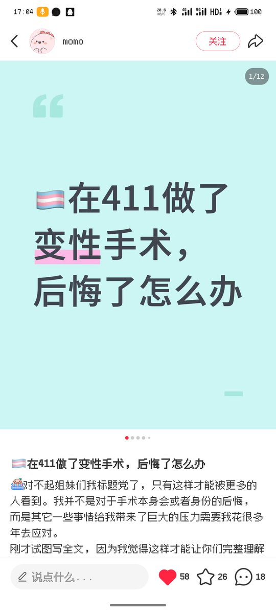
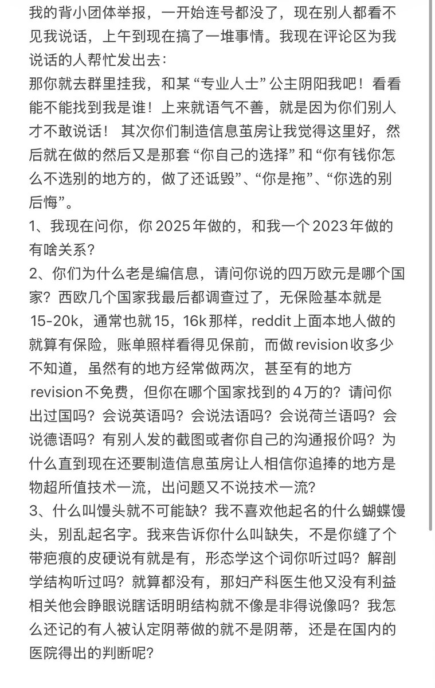

honnun
@h191980276
@AESISTN 鸿蒙批说不得，说了分分钟给你打成闹事反华搞lgbt颠覆国家政权


未命名符
@AESISTN
这帖子好神秘，评论区只准说411好话不准说坏话
我在评论区评论411做得差吹得牛逼大发不出来了
好像只能留下一个评论没办法继续评，赵烨德博士手眼通天堵人说话啊
贴主自己都不能评论了，我评论之后还私发了我这个（第二张图），然后这个我也发不出去
赵烨德本事真这么大吗？小红书帖子都给管了 https://t.co/UQ5r5M8xc7